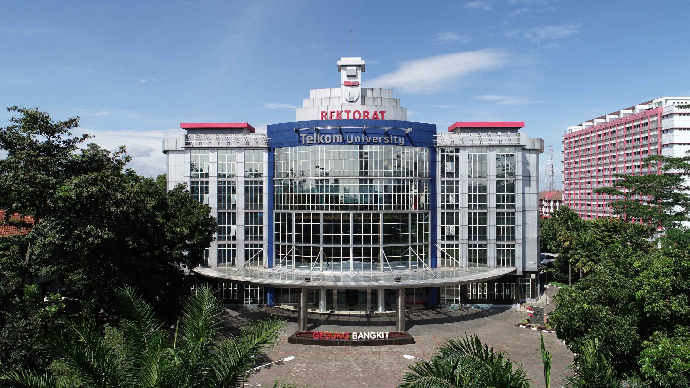
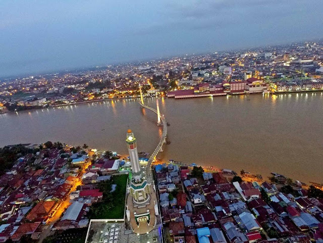
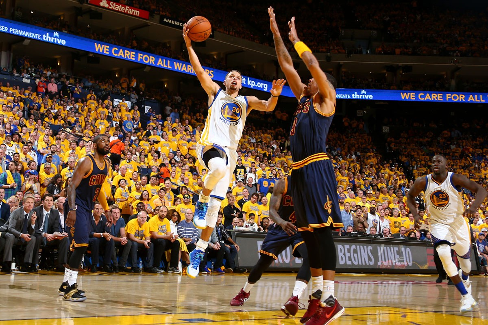

Pendidikan

Saat ini saya adalah seorang mahasiswa dari kampus Telkom University jurusan S1 Teknik Komputer di
Fakultas
Teknik Elektro. Telkom University sendiri berada di provinsi Jawa Barat, tepatnya di Jl.
Telekomunikasi Jl. Terusan
Buah Batu, Sukapura, Kec. Dayeuhkolot, Bandung, Jawa Barat 40257. Jurusan Teknik Komputer sendiri
merupakan sebuah program studi yang mengintegrasikan teknik elektro dan ilmu komputer dalam
mengembangkan sistem Perangkat Keras (hardware), Perangkat Lunak (software), Jaringan Komputer
(network), dan Keamanan Komputer (Computer Security).
Profil lulusan pada Program Studi S1 Teknik Komputer adalah seorang profesional dalam bidang berikut
:
- Insinyur Perangkat Keras
- Insinyur Jaringan Komputer
- Spesialis Keamanan Komputer
- Pemprogram Sistem
- Peneliti
- Wirausaha Teknologi
Kota Asal

Saya lahir dan berasal dari Kota Jambi yang berada di provinsi Jambi pada pulau
Sumatra.Kota Jambi
dibelah oleh sungai yang bernama Batanghari, kedua kawasan tersebut terhubung oleh jembatan yang
bernama jembatan Aur Duri. Kota Jambi memiliki luas sekitar 205,38 km² dengan penduduknya berjumlah
604.378 jiwa (2019).
Lambang Kota Jambi berbentuk perisai dengan bagian yang meruncing di bawah dikelilingi tiga garis
dengan warna bagian luar putih, tengah berwarna hijau, dan bagian luar berwarna putih. Garis hijau
yang mengelilingi lambang pada bagian atas lebih lebar dan di dalamnya tercantum tulisan “Kota
Jambi” yang melambangkan nama daerah dan diapit oleh dua bintang bersudut lima berwarna putih. Itu
melambangkan kondisi kehidupan sosial masyarakat Jambi yang terdiri atas berbagai suku dan agama,
memiliki keimanan kepada Tuhan yang Maha Esa.
Kegemaran
Saya memiliki beberapa kegemaran, diantaranya ialah:
Saya sudah hobi bermain musik sejak saya masih duduk di bangku SD, saya juga biasa bermain untuk
acara-acara seperti pentas seni,seminar, dan lain-lainnya. Saya biasa bermain alat musik gitar,
bass, dan saxophone. Saya juga biasa bermain musik daerah dibeberapa acara. Bagi saya musik itu hal
yang indah dan keren karena kita dapat menuangkan perasaan kita kedalamnya, mau itu perasaan sedih,
senang, atau yang lainnya.

Saya mulai mengenal basket sejak SD dari abang saya dan mulai bermain sejak saya memasuki SMP. Saat
SMA saya sering mengikuti pertandingan basket antar sekolah salah satunya DBL. Bagi saya olahraga
basket itu menyenangkan, keren, dan juga menyehatkan tubuh. Sampai kuliah pun saya masih tetap
bermain bola basket.